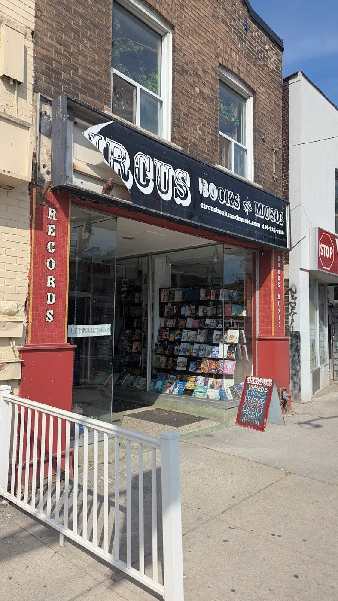
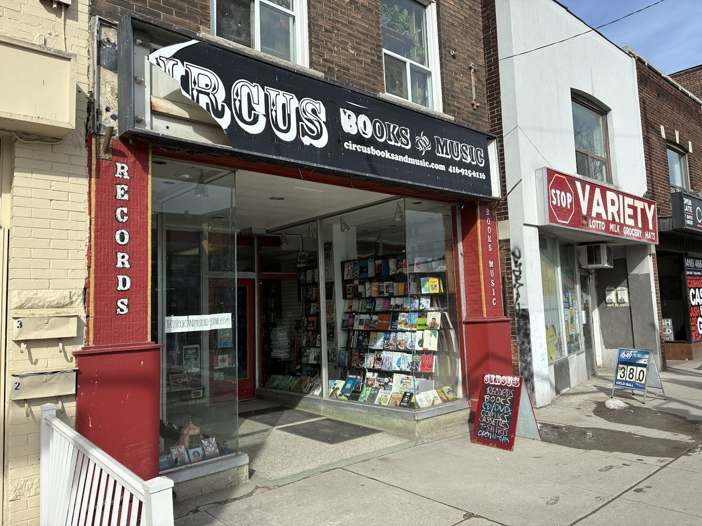

The Danforth · near Donlands Station
Used books, records and then some.
Circus Books & Music is at 866 Danforth Ave in Toronto, near Donlands Station. Google lists it as a book store. The shop’s own sidewalk board lists records, books, CDs and DVDs, comics, cassettes and T-shirts. Reviewers write about digging for rare records and leaving with books they actually wanted.
- Used books and records
- 4.6 from 204 Google reviews
- 866 Danforth Ave
- Near Donlands Station
What’s on the shelves
Used books
Google lists the shop as a book store. Reviewers write about the book selection, and listing photos show shelves labelled by subject, including philosophy, politics and spirituality, plus a table of books near the front.
Records, CDs and cassettes
Google review topics include record selection, rare CDs and cassettes. Listing photos show vinyl bins, CD racks and a wall of cassettes. Ryan Mcdonald, a music collector, calls it “a great record store.”
Comics, DVDs and T-shirts
The shop’s sidewalk board, in Google listing photos, lists records, books, CD/DVD, comics, cassettes and T-shirts. Google review topics include DVDs and comic selection, and a T-shirt rack is visible in the listing photos.
These details come from the shop’s public Google listing (read Nov 26, 2026), from the shop’s own sidewalk sign in those photos, and from the reviews quoted below. This page does not list prices.

A Danforth shop for books and music
Circus Books & Music is at 866 Danforth Ave, near Donlands Station. The awning over the door still shows circusbooksandmusic.com and the shop’s phone number; that web address does not currently load a working site, so it is not linked here. You can also find the shop on Facebook.
Hours do not agree across Google, the sidewalk board and other directories, so it is worth calling ahead. Google’s listing, checked Nov 26, 2026, is marked “Claim this business.”
What customers say
4.6 ★ from 204 Google reviews (checked Nov 26, 2026). Quotes are word for word. Each one says where it was read: on the Google listing itself, or on a public page that copies reviews.
★★★★★
I'm usually hesitant about stores that try to be too many things at once but there was a great selection of both books AND music here. I had saved a lot of used bookstores in Toronto and this wasn't one of them- I just came across it on the street- but it was my favourite because it had things I actually wanted. Everything is priced really well and if you dig there are some gems! To whoever donated their Take Care CD: I love you.
★★★★★
It’s hard to believe, but as a music collector I’ve had the BEST luck finding some rare gems by my favourite artists at this book store over the years. Music people - don’t sleep on this spot. This is a great record store. Helpful and friendly staff too! 10/10
★★★★★
I was pleasantly surprised at the selection of used books and vinyl records they carry. Bought 3 books that day, all spiritual classics. The gentleman at the counter was kind enough to recommend other Toronto bookstores that carry similar books.
★★★★★
Excellent boutique used bookstore on the Danforth in Toronto. Boasts a good selection and numerous genres of books, comics, movies, music, and more. The selection changes up once in awhile so it's nice to pass by and dig for treasure.
The service I received from Ron and Ryan was excellent, as it usually is here which is a part of it's charm!
It is located a one minute walk from Donlands subway station, in the heart of Greek town, right across from a famous hakka restaurant, making it great for a day out for perusing bookstores and enjoying a lunch or dinner.
Inside the shop
Real photos from the shop’s public Google listing, downloaded Nov 26, 2026. Photos that show price stickers or a priced bin sign are not included. Tap to enlarge.
Visit Circus Books & Music
866 Danforth Ave
Toronto, ON M4J 1L7
near Donlands Station
| Monday | 11 a.m.–6 p.m. |
|---|---|
| Tuesday | 11 a.m.–6 p.m. |
| Wednesday | 11 a.m.–6 p.m. |
| Thursday | 11 a.m.–6 p.m. |
| Friday | 11 a.m.–6 p.m. |
| Saturday | 11 a.m.–6 p.m. |
| Sunday | 11 a.m.–6 p.m. |
Google’s listing, read Nov 26, 2026, shows 11 a.m.–6 p.m. every day. The shop’s own sidewalk board, visible in Google listing photos, says “OPEN 11–8PM.” A paper sign in the shop window in those photos appears to read “11–6 EVERYDAY.” Blast Toronto lists Monday–Saturday 11 a.m.–8 p.m. and Sunday 11 a.m.–6 p.m.; Yellow Pages lists Monday–Saturday noon–7 p.m. and Sunday noon–6 p.m. The Google listing is marked “Claim this business,” so those hours may not be kept current by the shop. Please call (416) 925-6116 to confirm before you visit.